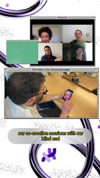
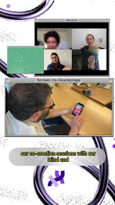
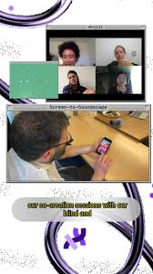
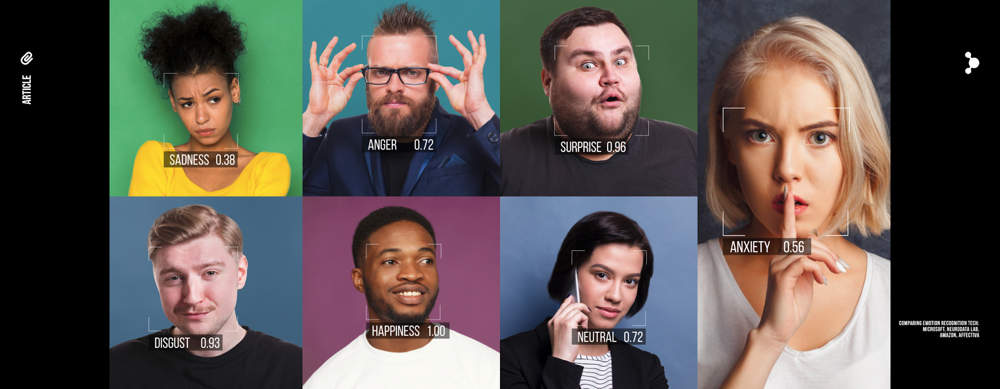
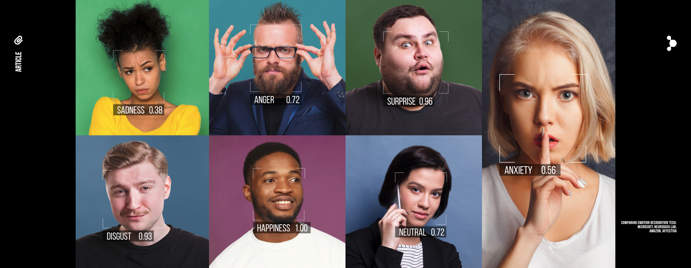
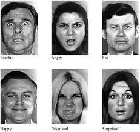
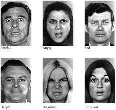
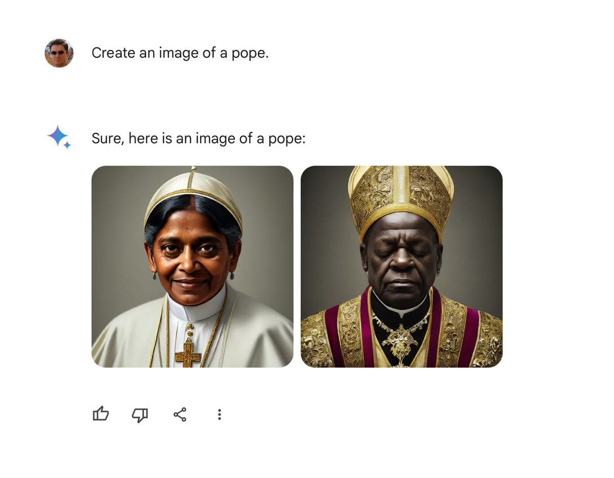

About Me
AI Engineer
AI Artist
 

HKU 2026 Workshop — Part 2
Ahnjili ZhuParris

Generative AI enables users to quickly generate synthetic media based on a variety of inputs.
Models learn patterns from training data and generate new content that resembles — but is not identical to — what they were trained on.
 

 



Reduce the weights of certain terms or content (such as violent or racist imagery)

Increase and diversify the dataset to shape how prompts are interpreted
No permission. No compensation. No opt-out.
Embedding invisible markers to track provenance of creative works
AWS, Azure, Google Cloud, Teams, Office 365, Slack
Netflix, YouTube, Spotify, social media platforms
Corporate email, file storage, internal applications
High-frequency trading, payment processing (Visa, Mastercard)
Multiplayer servers, game streaming (Xbox Cloud, GeForce Now)
Amazon, Shopify, Bitcoin mining, blockchain
| Traditional Applications | AI Applications | |
|---|---|---|
| Power | Only require CPU | Requires high-end GPU/TPU clusters |
| Heat & Cooling | Traditional air cooling | Liquid water cooling (higher density packing) |
| Usage Patterns | Ebbs & Flows | Runs 24/7, no idle time |
| Growth Rate | Grown steadily over decades | Growing exponentially |

Deepfake of Zelensky "surrendering"
When synthetic media becomes indistinguishable from reality, deepfakes don't just copy the world — they create a new one.


Click image to toggle blur
Click image to toggle blur
Generating explicit content of real people via text descriptions
Generating explicit anime-style content based on real people
@CoconutKitty
no-consent deepfake
=
infringement
Google's video generation model integrated into YouTube, enabling AI-generated video content at scale.

Meta's generative AI tools integrated across Instagram and Facebook for content creation.
OpenAI's next-generation video model — higher fidelity, longer clips, better prompt adherence.
Text-to-Image
Text-to-Video
Image-to-Image
Image-to-Video
Image+Text-to-Video
Wide variety of options, continually updated — the go-to choice for many users.
Friendly GUI and supportive community, accessible for beginners.
GitHub: AliaksandrSiarohin/first-order-model
Animates portrait images using a driving video.

stability.ai · stablediffusionweb.com
No app or website yet — research project
Feed-Forward Photorealistic Style Transfer of Large-Scale 3D Neural Radiance Fields
/imagine prompt: equirectangular projection of a visually stunning landscape: majestic mountains, golden sunset, expansive, awe-inspiring, breathtaking, vivid colors, dramatic lighting, sharp focus, good exposure, insanely detailed, ultra-wide angle lens --no black edges, text, any distortion --ar 16:9 --v 4 --style 4c
A handful of corporations control frontier AI — massive capital, compute, and data create extreme power asymmetry
Training data scraped from billions without permission — colonial extraction logic: take from the many, profit for the few
Marketed as "democratization" while designed to eliminate jobs — wealth concentrates upward, collective power weakens
Models encode their creators' biases — outputs flatten cultural diversity, guardrails set unilaterally by corporations
Deepfakes erode shared reality — the "liar's dividend" benefits those in power, authentic voices get drowned out
Massive energy and water consumption — environmental burden externalized onto marginalized communities
Questions?
Owning Your Generative Self